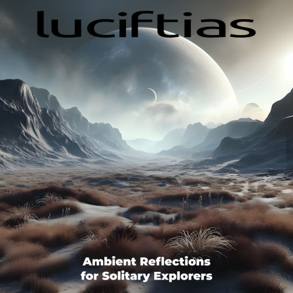

New Album Release!
Ambient Reflections For Solitary Explorers
New album available now on Bandcamp, Funkwhale and Archive.org!
Consisting of a single long-form ambient piece clocking in at just over an hour, this album was a deliberate attempt at moving away from tracks created with played instruments and returning to the more experimental side of Luciftias, albeit still falling within the ambient / drone realm of things. Taking inspiration from my side project, Placebo Button, I worked with a Python utility I wrote called image2sound. Using what I call "reveal mode", I provided an artwork file, and the utility parsed the data contained in the image itself to determine various attributes, such as key, tempo, and track length, before exporting an audio file. The stereo track was then brought into Audacity, where I applied multiple treatments to get the final piece found here.